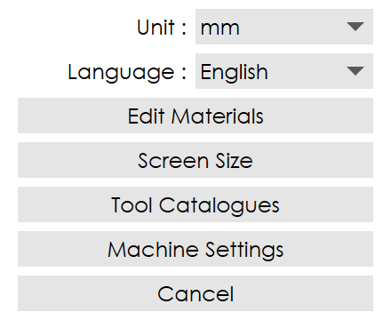
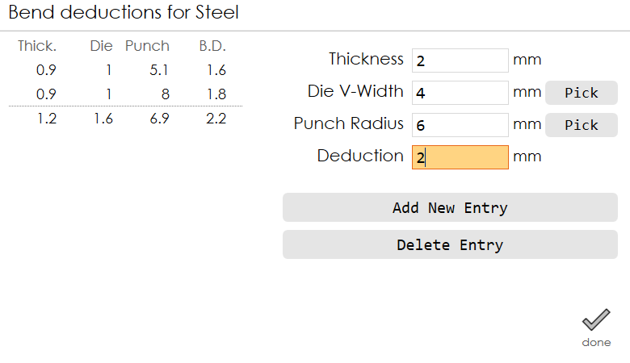
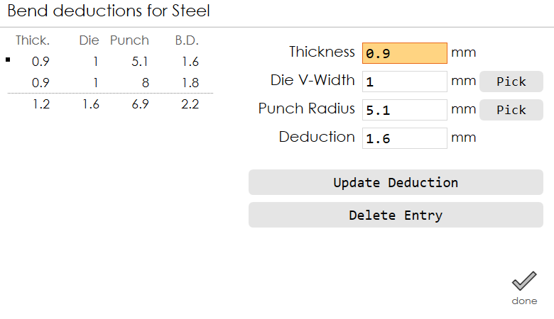
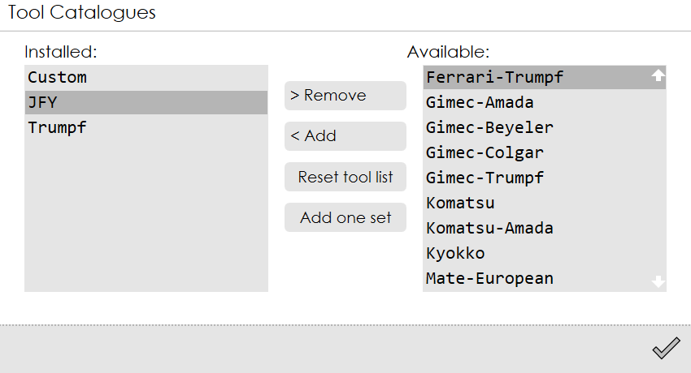
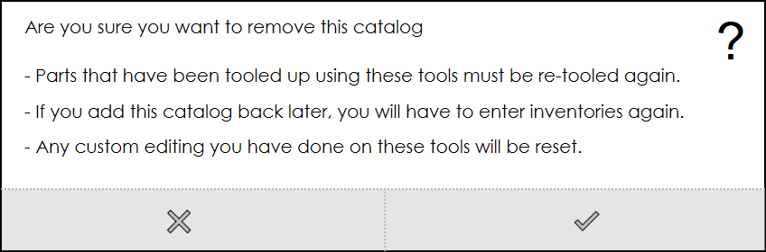

Other Settings
This page groups together the settings that are global.

Unit
Switches the current working units (mm and inch).
Language
Click the language drop-down list icon to choose the preferred language.
Edit Materials
From the Settings page, choose Other Settings → Edit Materials to access the Materials library.
The Edit Materials library displays the current list of materials.
To view the list of available materials, press the next and previous navigation icons.
To add a new item to the list, press the add icon. Edit the material’s name and other parameters and press the done icon to save the new material.
To remove an existing item from the library, press the delete icon.
Ve/Ri field is used for die selection. The range of input is 1 to 10.
E stands for Young’s modulus, and n for the strain hardening exponent.
Use the deductions function to control unfolding length of a bend.
The list of bend deductions is displayed on the left. The currently selected entry is highlighted with a small dot near it.
To add a new entry, type the values for thickness, v-width, punch radius and deduction and press the Add New Entry button.

To update an existing entry, type the values for thickness, v-width, punch radius and deduction and press the Update Deduction button.

To import the values from the tool inventory, use the Pick button and select the desired die and punch.
| Deduction table is organized based on thickness, v-width and punch-radius, and not by the actual punch or die names. |
The bend deduction entry will be the same for all dies with the same die v-width. The Part Settings page provides access to these entries after they have been defined here.
Use the Delete Entry button to delete an entry from the bend deduction table.
Screen Size
Use this option to change the screen size of RightAngle.
Tool Catalogues
Standardized tool catalogues that support a number of press brake manufacturers are available to install and use.
The tool catalogues window displays the installed list on the left side and the available list on the right side.

To add a full tool catalogue, press <Add button.
To remove a tool catalogue, press the >Remove button.
When a tool catalogue is removed, the following confirmation window is displayed:

Press the tick button to confirm.
| The tool catalogues must be in a standardized format for easy installation. |